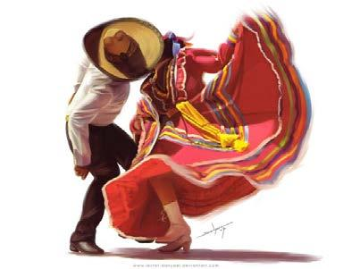
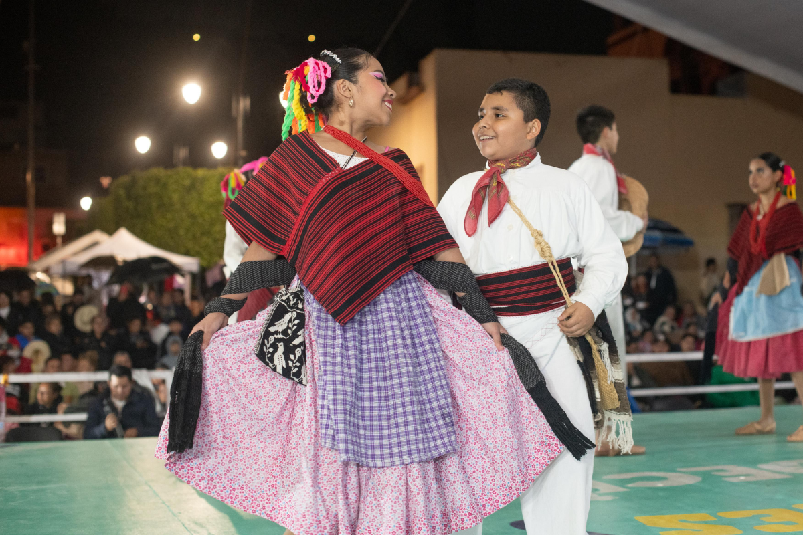
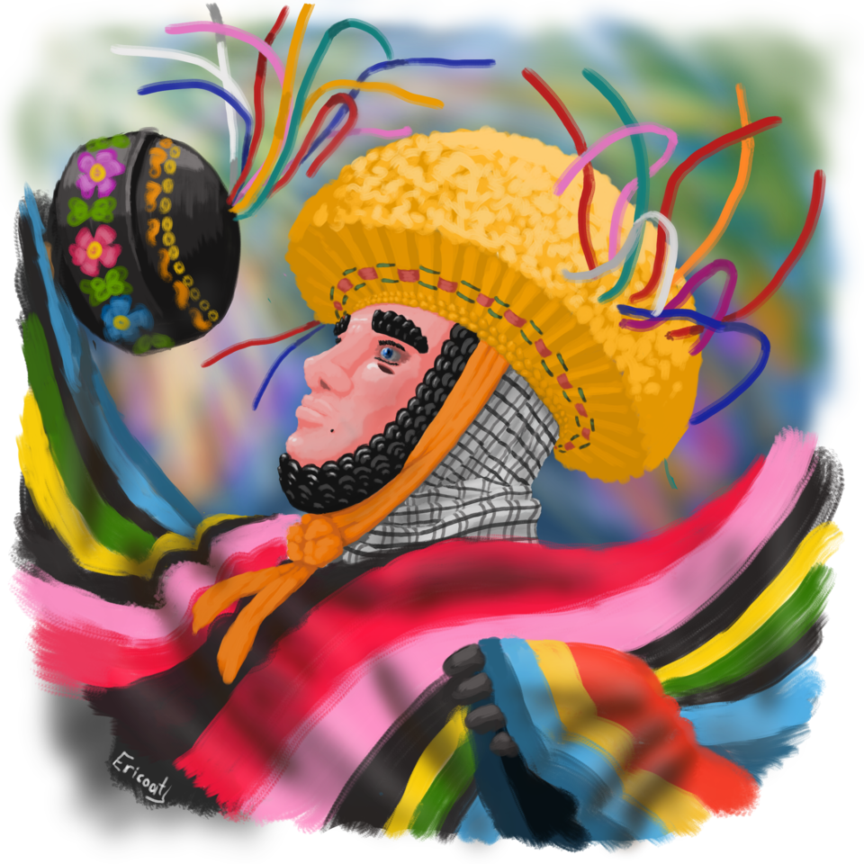
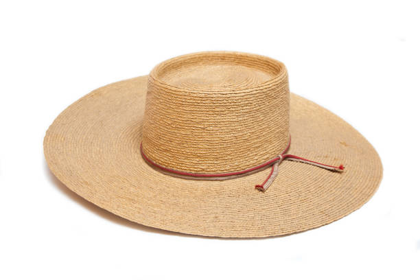
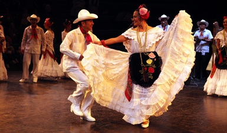
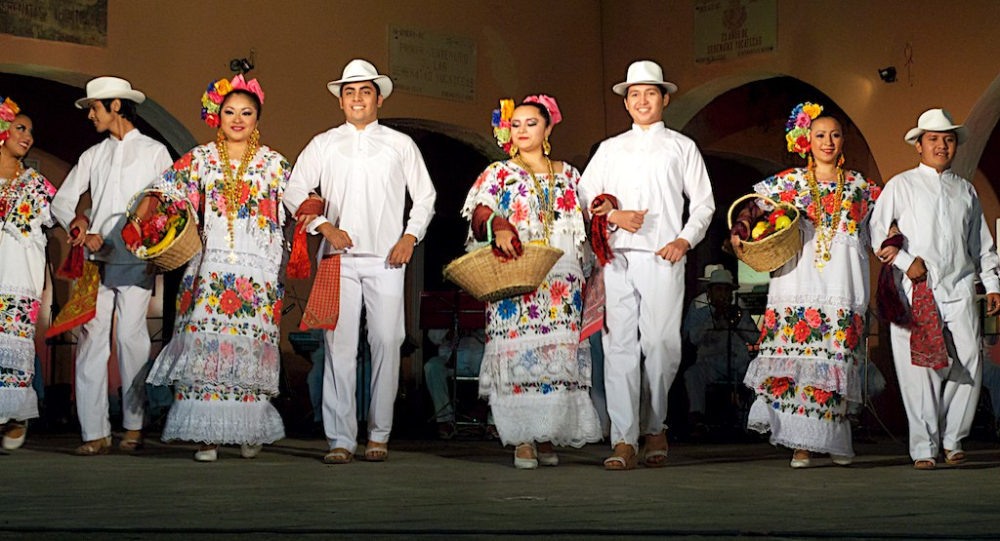

- Jarabe Tapatío: Considerado el baile nacional, se originó en Guadalajara, Jalisco.

- Danza de los Viejitos: Una danza humorística de Michoacán, donde jóvenes se disfrazan de viejitos con máscaras y bastones, realizando movimientos ágiles.

- Huapango: Una danza de la región Huasteca, con elementos musicales de la región.

- Danza de los Parachicos: Una danza de Chiapas que combina elementos indígenas y católicos, con máscaras, tocados de ixtle y sonajas.

- Brinco de Chinelo: Una danza de Morelos donde los bailarines, disfrazados como burla de los hacendados españoles, realizan movimientos rítmicos y saltados al ritmo de una banda.

- Danzas de Veracruz: El Son Jarocho, una danza de Veracruz con elementos de la música regional.

- Danzas del Norte: La Polka Norteña, una danza popular del norte del país.

- Danzas de Yucatán: La Jarana Yucateca, una danza característica de Yucatán.
